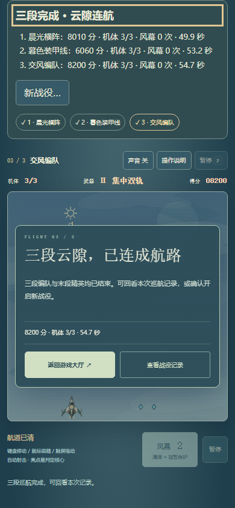
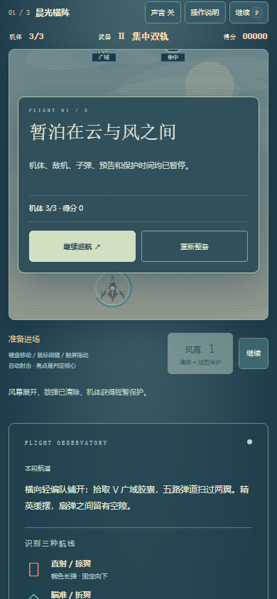
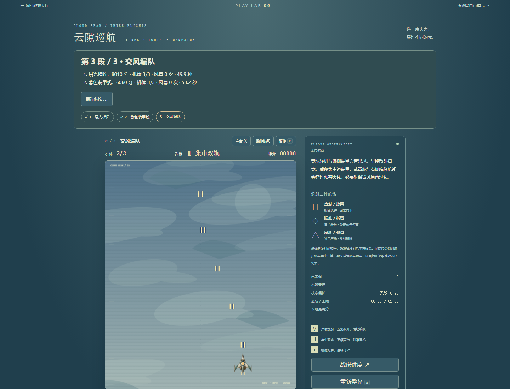
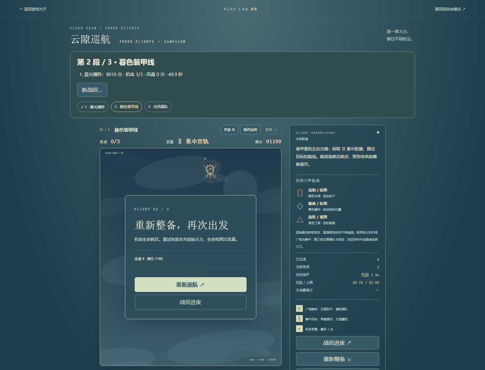
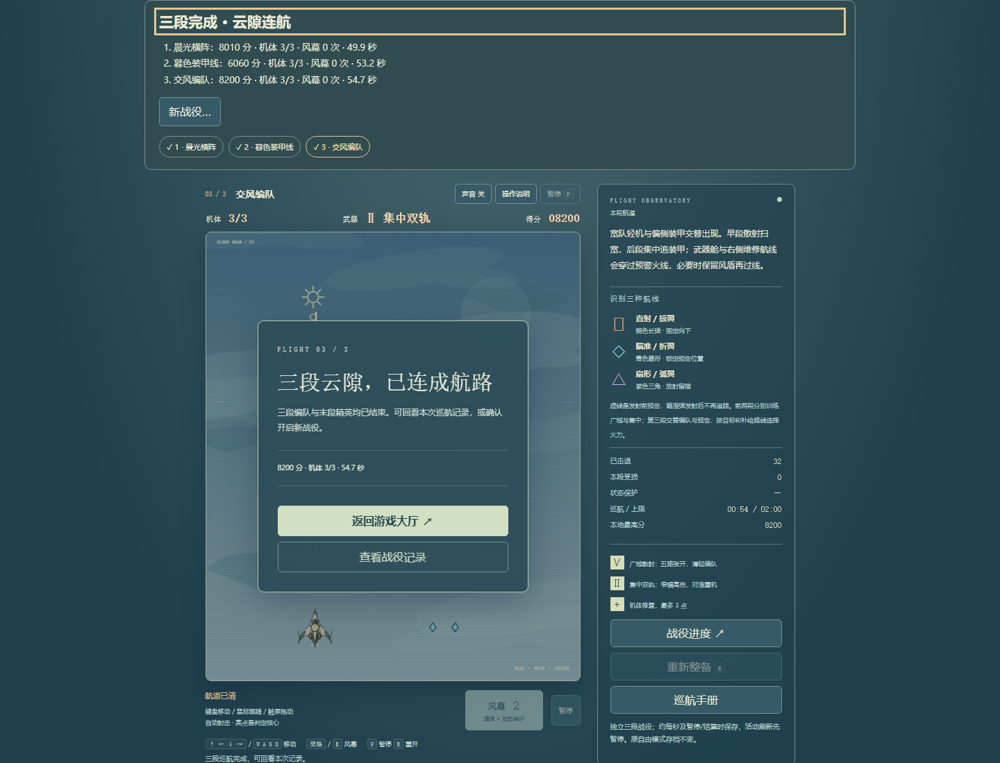

基线17bd572。原两段不变，加原创「交风编队」：宽队轻机与偏侧装甲交错、补给左右换线、第三精英混合扇形/锁点/直射。沿用第二段HP、弹速、运动与冷却基础值。连续三段、当前段重试、独立存档与结尾回顾，目录仍42项。本页是有限证据，不是品质认证。
本地Windows桌面Chromium147，1440×1100及390×844 CSS模拟。只读策略约50ms一次给鼠标目标，实际原生鼠标移动，未改游戏时间、血量、胜负或存档。键盘移动/释放短验。第三段窄屏仍为鼠标辅助完成；触控另列。以下均活动秒，不保证真人通关时长。
| 航段 | 实际结果 | 火力观察 |
|---|---|---|
| 晨光横阵 | 49.881秒 / 8010分 / 43击退 / 3HP | 集中→散射→集中 |
| 暮色装甲线 | 53.198秒 / 6060分 / 14击退 / 3HP | 集中 |
| 交风编队 | 54.731秒 / 8200分 / 32击退、2离场 / 3HP | 6.75秒取散射，21.47秒改集中 |
第二段另用普通追弹输入自然15.741秒失败，刷新仍失败；重试恢复3HP/2风幕/集中，前段成绩保留。活动刷新精确暂停且清输入；真实关间和最终结局在原会话直接刷新通过。每关胜利立即保留实际浏览器完成档，未重建或注入完成态。本路线未受伤、未用风幕，因此不声称普通主流程验证了维修或风幕必要性，也不证明任意策略平衡。
390 CSS下Chromium可信touch事件模拟：一指拖动、另一指风幕2→1、抬第二指不丢第一指、最终抬指与取消清目标、暂停计时冻结并可恢复；4次可信touch pointerdown。这是浏览器模拟，非真实手机。另复用实际完成档检查新战役默认取消、确认后从第一段重置且保留本战役最高分。原自由模式键不改。
独立QuotaExceededError夹具：旧有效存档原字节不删除，准确显示刷新丢进度风险，恢复写入后清警告。坏档夹具原字节保全且禁止覆盖。故障不是实际设备配额不足。只读模型6组覆盖旧两关逐帧严格同指令相等、快照边界及120秒自然超时；旅程7组覆盖三关进度、终态、重复结算、失败重试、独立存档与失败恢复。模型结果不是页面实玩。





普通UI记录 · 真实完成档复用及故障夹具 · 模型路线 · 6组兼容检查 · 7组旅程检查 · 入口短验 · 可重放模型测试 · 旅程/存储测试 · 只读辅助策略
未发现本批阻断；长期难度、无辅助手感、真实手机触控/性能、声音听感与审美仍需真人判断。没有重测八关旧版或全站全部游戏。沿用原创AI辅助机体图集，未使用原作地图、截图或音乐。